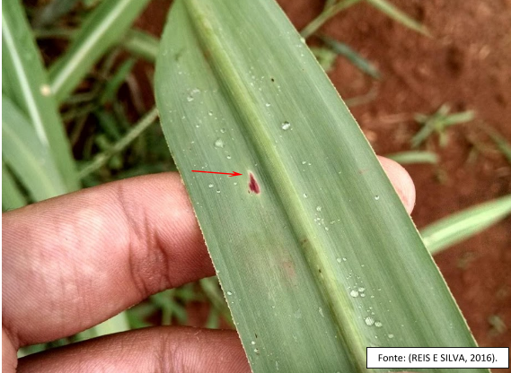
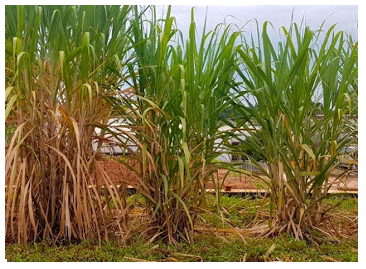
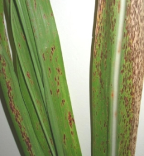
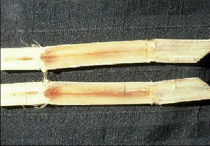
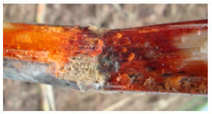
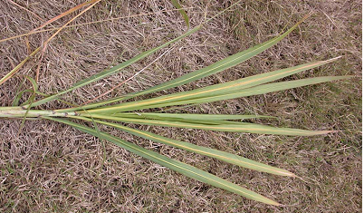

Doença: Escaldadura das Folhas
Nome científico: Xanthomonas albilineans
Tipo: Bacteriana;
Sintomas: Apresenta 3 tipos de sintomas: latente, crônico e agudo. 1º Sintoma latente é que prevalece na maioria das variedades comerciais, que apresentam tolerância e podem ficar anos sem manifestar um sintoma externo, ocasionalmente, no interior de colmos maduros a descoloração vascular na região nodal. 2º Sintoma crônico estrias brancas estendem-se por extensas áreas do limbo foliar podendo atingir a bainha. As estrias podem evoluir para diversos graus de clorose foliar, de bordos indefinidos até a necrose, havendo, frequentimente, brotação das gemas basais do colmo. 3º Sintoma agudo ocorre em variedades suscetíveis, intolerantes ou com resistência intermediária, neste caso há queima das folhas como se a planta tivesse sido escaldada, em algumas vezes, sem manisfetar sintomas de brotação lateral do colmo
Controle: Uso e variedades resistentes e tolerantes ao patógeno, lugares que forem cultivares variedades suscetíveis, recomenda a aplicação de medidas de controle: tratamento térmico de toletes para limpeza do material de propagação.
Temperatura: 25 a 28ºC
Umidade relativa do ar: Umidade baixa
Etiologia: A temperatura ótima para seu crescimento varia de 25 a 28ºC, a bacteria propaga-se por mudas infectadas, facões de corte, colhedeiras, roedores e pela gutação

Doença: Estria vermelha
Nome científico: Acidovorax avenae subsp. avenae
Tipo: Bacteriana;
Sintomas: Podem ocorrer 2 sintomas conjuntamente ou isolados: como surgimento de estrias finas e longas de 5 a 60 cm de comprimento ou surgimento de podridão do topo da planta. Nas folhas, oo primeiros sintomas são estrias enchar-cadas que gradualmente tomam a coloração vermelha. Nas lesões novas é comum notar-se exsudação da bactéria
Controle: Uso de variantes resistentes.
Temperatura: Acima de 28º
Umidade relativa do ar: Alta umidade (acima de 90%)
Etiologia: Disseminação por respingos de chuva e vento, e a infecção favorecida por pquenos ferimentos produzidos pelo atrito entre as folhas

Doença: Raquitismo das Soqueiras
Nome científico: Leifsonia xyli subsp. xyli
Tipo: Bacteriana;
Sintomas: Pode-se observar na altura do nó, na parte mais velha de colmos maduros, vasos com a coloração alterada variando de alaranjado-claro a vermelho-escuro
Controle: Metodo de exclusão, utilizando mudas sadia para o plantio, Há também o metodo de tratamento térmico (termoterapia) de toletes ou gemas de cana-de-açúcar por 2 horas a 50ºC em plantio de viveiros é mais frequente.
Etiologia: Transmitido mecanicamente por facões e elementos de corte de corte de olhedeiras, e a introdução primária em campo é feita por mudas infectadas
Fúngicas

Ferrugem
Nome científico: Puccinia melanocephala
Etiologia: A germinação dos uredósporos é favorecida oela presença de água na superficie da folha e temperaturas moderadas.
Tipo: Fúngica
Sintomas: A coloração de pústulas na página inferior das folhas variam de amareladas a marrom-escuro, e medem de 2 a 7 mm de comprimento por 1 mm de largura e mostram a formação de esporos suberpidérmicos com ruptura da epideerme para sua liberação.
Controle: Uso de variaveis resistentes. Ou cultivo de variedades com resistência intermediária, ou suscetível, em regiões de escape onde o ambiente é desfavoravel ao patógeno.
Temperatura: 20 e 25ºC.

Podridão Abacaxi
Nome científico: Ceratocystis paradoxa (Thielaviopsis paradoxa)
Etiologia: Produz dois tipos de esporos: microconídios e macroconídios. OS primeiros são produzidos endogenamente nos conidióforos são hialinos, pequenos, eretos e eliminados na forma de bastonetes em cadeia.
Tipo: Fúngica
Sintomas: O fungo penetra na planta por cortes ou ferimentos. À medida que a podridão avança, a coloração ods tecidos vai se alterando, passando para cinza, parda-escura e finalmente negra
Controle: qualquer medida que estimule a brotação rápida dos toletes ou proteja as feridas por onde o fungo penetra, produz excelentes resultados no controle da doença.
Temperatura: Temperatura baixa

Podridão Vermelha
Nome científico: Glomerella tucumanensis (Colletotrichum falcatum)
Etiologia: O agente causal é Colletotrichum falcatum que corresponde, na fase perfeita, a Glomerella tucumanensis. Produz acérvulos sub-epidérmicos eruptivos com setas retas ou tortuosas, pardo-escuras, septadas, abundantes e facilmente visíveis com lupa manual.
Tipo: Fúngica
Sintomas: Durante a germinação do tolete, causa a morte das gemas e redução na germinação. Nos colmos, o patógeno ausa, internamente, uma podridão vermelha. Na nervedura central das folhas aparecem lesões vermelhas que mais tarde ficam com o centro mais claro
Controle: Uso de variedades resistentes
Viróticas

Síndrome do Amarelecimento da Folha (Amarelinho)
Nome científico: Sugarcane yellow leaf virus.
Etiologia: Pelos sintomas de amarelecimento das folhas, período do ano e condições climáticas em que se manisfesta, a doença pode ser comparada ao "mal de outono" ou "declínio de outono", anomalia atribuida a fatores genéticos.
Tipo: virótica
Sintomas: As nervuras foliares mostram intenso amarelecimento principalmente na face abaxial. Depois o limbo se torna-amarelado e a nervura central, arroxeada
Controle: Substituição de variedades que apresentam os sintomas.

Mosaico
Nome científico: Sugarcane mosaic virus - SCMV e Sorghum mosaic virus - SrMV.
Etiologia: O SCMV e o SrMV são trasmitidos por grande número de espécies de pulgões, sendo a relação vírus-vetor do tipo não persistente. A trasmissão primária é feita por plantio de mudas infectadas.
Tipo: virótica
Sintomas: Nas folhas aparecem sintomas de mosaico, touceiras têm desenvolvimento retardado, tendo chance de sua altura ser reduzida pela metade
Controle: Uso de variedades resistentes, utilização de mudas sadias e eliminação de plantas doentes nas áreas de viveiro de mudas, pode diminuir na incidência inicial